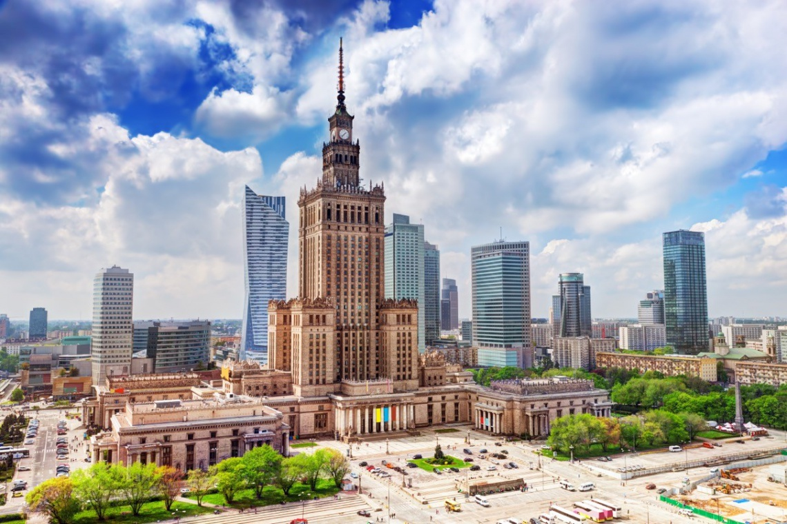
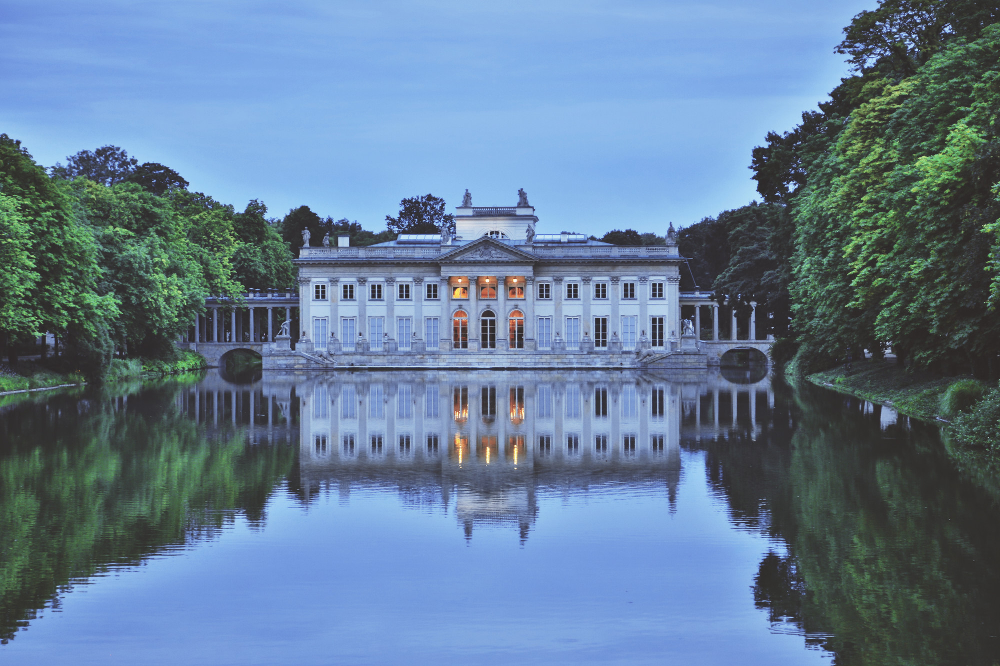
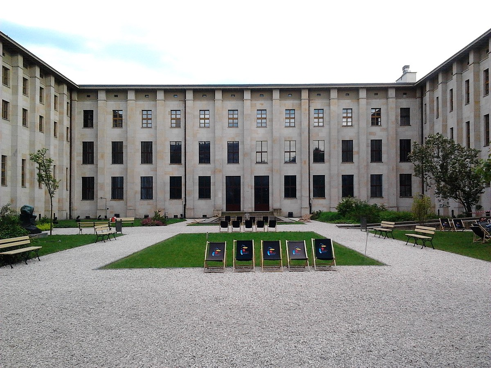
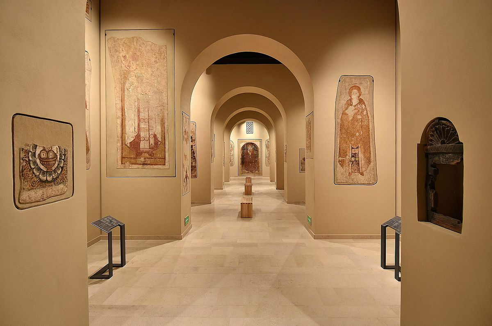
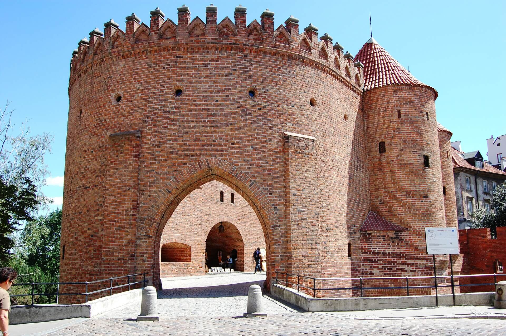
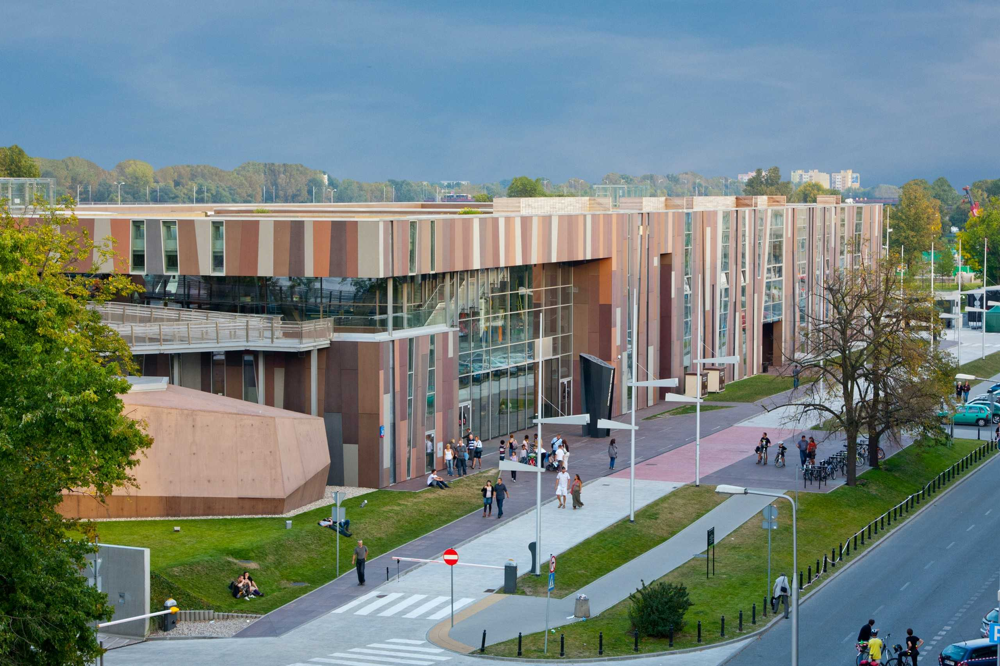
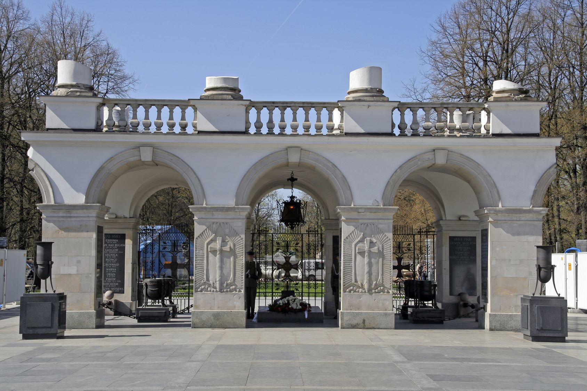
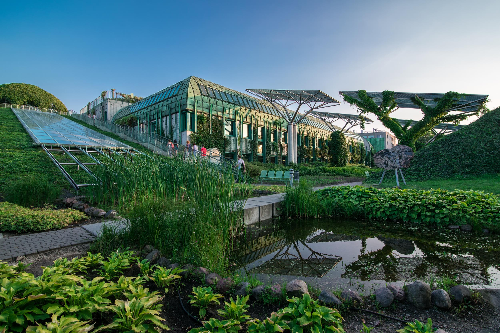
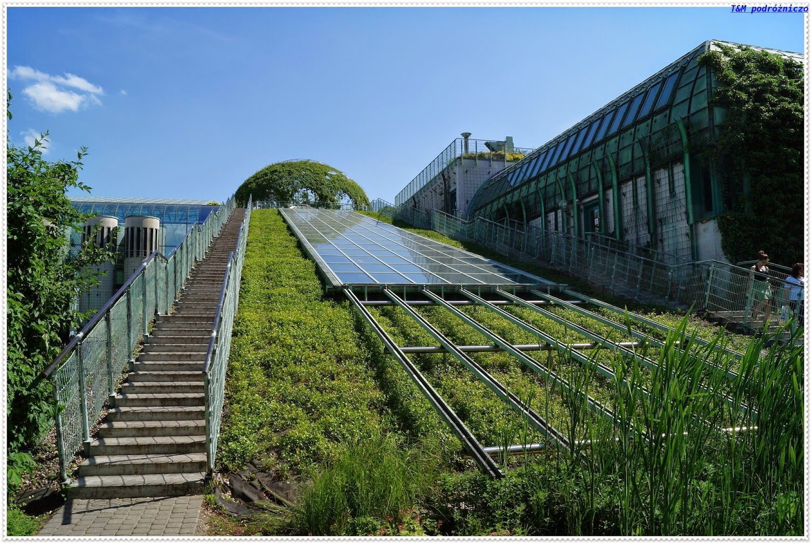

1. Warsaw Old Town
The Warsaw Old Town is the oldest part of Warsaw, the capital city of Poland. It was established in the 13th century.
It is one of the most popular tourist attractions in Warsaw. The heart of the area is the Old Town Market Place, rich
in restaurants, cafes, and shops. The Old Town features beatiful historic architecture.

2. The Royal Castle
The Royal Castle in Warsaw is a castle residency that formerly served throughout the centuries as the official
residence of the Polish monarchs. It is located in the Castle Square, at the entrance to the Warsaw Old Town.
The personal offices of the king and the administrative offices of the Royal Court of Poland were located there
from the sixteenth century until the Partitions of Poland. The Royal Castle in Warsaw, due to its iconic appearance
and its long history, is one of Warsaw's most recognizable landmarks.

3. Palace of Culture and Science
Palace of Culture and Science (Polish: Pałac Kultury i Nauki; abbreviated PKiN) is a notable high-rise building in
Warsaw, Poland. Constructed in 1955, it is the center for various companies, public institutions and cultural
activities such as concerts, cinemas, theaters, libraries, sports clubs, universities, scientific institutions
and authorities of the Polish Academy of Sciences. Motivated by Polish historicism and American art deco high-rise
buildings, the PKiN was designed by Soviet architect Lev Rudnev in "Seven Sisters" style and is informally referred
to as the Eighth Sister.
The Palace of Culture and Science is the tallest building in Poland, the eighth-tallest building in the European Union
and one of the tallest on the European continent. It is 237 metres (778 ft) tall.[2]


4. Wilanow Palace
Wilanow Palace is a royal palace located in the Wilanow district, Warsaw. Wilanow Palace survived Poland's partitions
and both World Wars, and so serves as a reminder of the culture of the Polish state as it was before the misfortunes
of the 18th century.
It is one of Poland's most important monuments. The Palace's museum, established in 1805, is a repository of the
country's royal and artistic heritage. The palace and park in Wilanów hosts cultural events and concerts,
including Summer Royal Concerts in the Rose Garden and the International Summer Early Music Academy.
The palace, together with other elements of Warsaw Old Town, is one of Poland's official national Historic
Monuments, as designated September 16, 1994. Its listing is maintained by the National Heritage Board of Poland.
Since 2006, the palace has been a member of the international association of European Royal Residences.


5. Lazienki Park
Łazienki Park is the largest park in Warsaw, Poland, occupying 76 hectares of the city center.
The park-and-palace complex lies in Warsaw's central district on Ujazdów Avenue, which is part of the "Royal Route"
linking the Royal Castle with Wilanów Palace to the south.
Originally designed in the 17th century as a baths park (hence the name) for nobleman Stanisław Herakliusz Lubomirski,
in the 18th century Łazienki was transformed by Poland's King Stanisław August into a setting for palaces, villas,
classicist follies, and monuments.
In 1918 it was officially designated a public park. Łazienki is visited by tourists from all over Poland and the world,
and serves as a venue for music, the arts, and culture. The park is also home to peacocks and a large number of squirrels.

6. National Museum
The National Museum in Warsaw (Polish: Muzeum Narodowe w Warszawie), popularly abbreviated as MNW, is a national museum
in Warsaw, one of the largest museums in Poland and the largest in the capital. It comprises a rich collection of ancient
art (Egyptian, Greek, Roman), counting about 11,000 pieces, an extensive gallery of Polish painting since the 16th century
and a collection of foreign painting (Italian, French, Flemish, Dutch, German and Russian). The museum is also home to
numismatic collections, a gallery of applied arts and a department of oriental art, with the largest collection of Chinese
art in Poland, comprising some 5,000 objects.
The Museum boasts the Faras Gallery with Europe's largest collection of Nubian Christian art and the Gallery of Medieval
Art with artefacts from all regions historically associated with Poland, supplemented by selected works created in
other regions of Europe.


7. Warsaw Barbican
The Warsaw Barbican is a barbican (semicircular fortified outpost) in Warsaw, Poland, and one of few remaining relics of the
complex network of historic fortifications that once encircled Warsaw. Located between the Old and New Towns,
it is a major tourist attraction.

8. Copernicus Science Center
Copernicus Science Center is a science museum standing on the bank of the Vistula River in Warsaw, Poland.
It contains over 450 interactive exhibits that enable visitors to single-handedly carry out experiments and
discover the laws of science for themselves. The Center is the largest institution of its type in Poland and
one of the most advanced in Europe. In 2015, since its opening, it had been visited by over 5 million people.

9. Tomb of the Unknown Soldier
The Tomb of the Unknown Soldier (Polish: Grób Nieznanego Żołnierza) is a monument in Warsaw, Poland, dedicated to
the unknown soldiers who have given their lives for Poland. It is one of many such national tombs of unknowns that
were erected after World War I, and the most important such monument in Poland.
The monument, located at Piłsudski Square, is the only surviving part of the Saxon Palace that occupied the spot
until World War II. Since 2 November 1925 the tomb houses the unidentified body of a young soldier who fell during
the Defence of Lwow. Since then, earth from numerous battlefields where Polish soldiers have fought has been added
to the urns housed in the surviving pillars of the Saxon Palace.
The Tomb is constantly lit by an eternal flame and assisted by a guard post by the Representative Company of the
Polish Army. It is there that most official military commemorations take place in Poland and where foreign
representatives lay wreaths when visiting Poland.
The changing of the guard takes place on the hour of every hour daily, 365 days a year.

10. University Library Rooftop Garden
The garden designed by landscape architect Irena Bajerska, has an area of one hectare, and is one of the largest roof
gardens in Europe. It is freely accessible not only to the academia, but also to the public.

